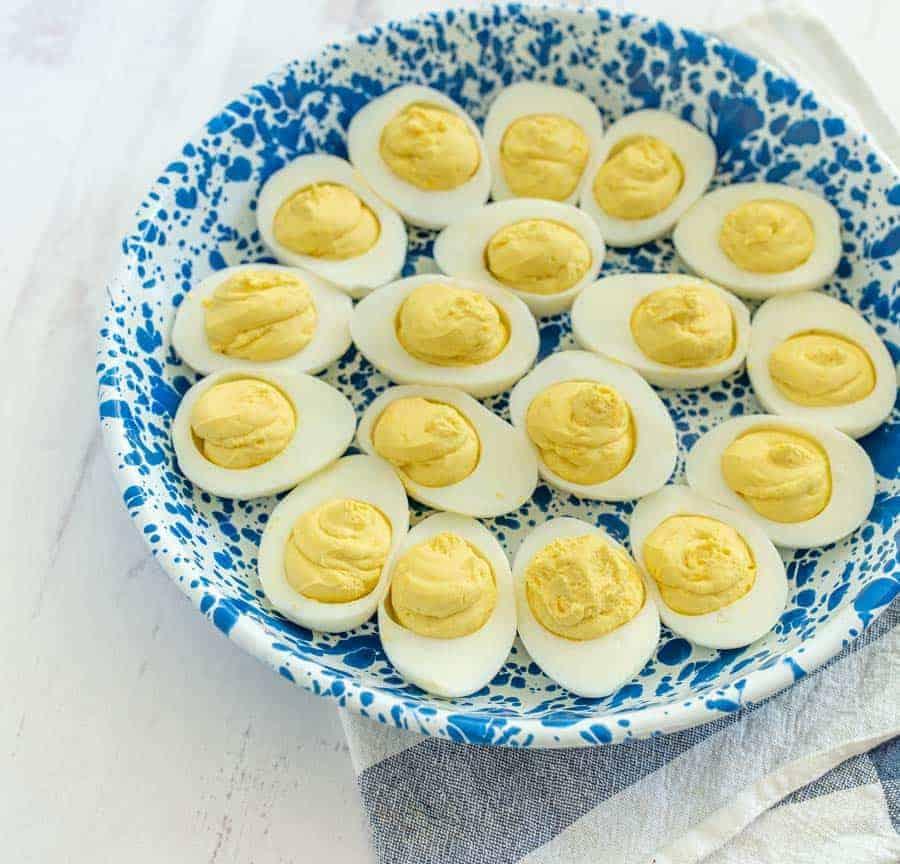

Dick's Deviled Eggs

Image Source: Bless This Mess
Classic low-fuss deviled eggs
These deviled eggs are a cherished treat at Christmas for my family.
My grandpa made these every year, and I always had to sneak one or two before dinner.
They are so good!
Ingredients
- yolks from boiled eggs
- whites from boiled eggs - halved to hold deviled yolk mixture
- Kraft mayonnaise - it's gotta be Kraft
- apple cider vinegar - 1 tsp at a time
- yellow mustard - 1 tsp at a time
- salt & pepper
Steps
- Boil eggs and allow to cool in refrigerator for several hours.
- Add egg yolks, mayo, apple cider vinegar, and mustard to the bowl.
- Mash and mix the ingredients together.
- Add mayo, apple cider vinegar, mustard, salt, and pepper to taste.
- Scoop heaping spoons of yolk mix into egg white halves.